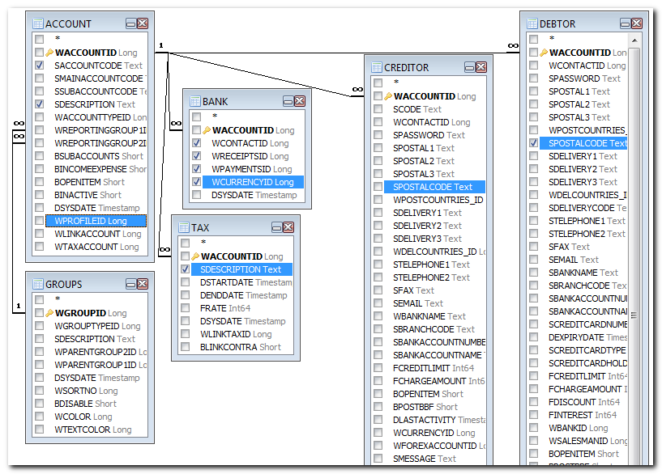
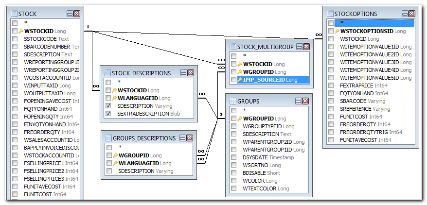
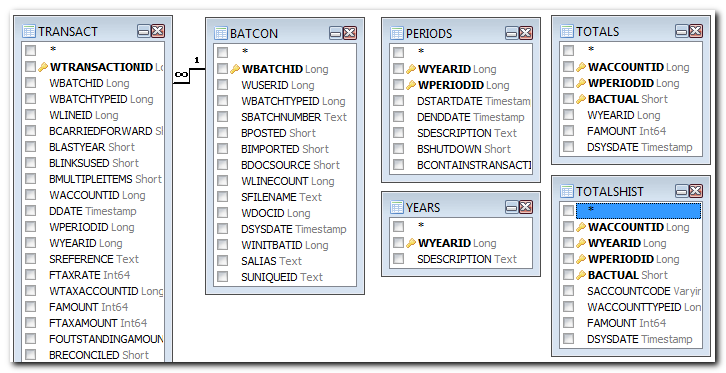
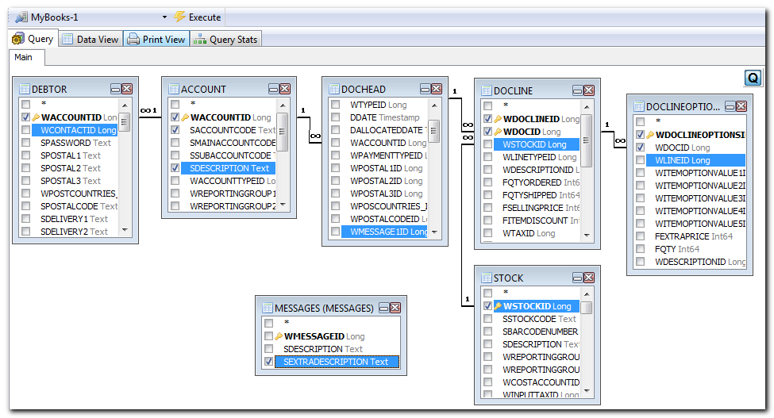

Reportman - References - Data structure
Visual Query Editor
Good SQL queries can be much easier with a visual editor. You may download the FlySpeed Query software (free version (supports only a single database) or purchase a version which supports multiple databases) from:
http://www.activedbsoft.com/overview-querytool.html
With this tool you may connect to the database of a Set of Books. To do this, select the Firebird or Interbase driver and then select the books.fdb database file.
Once you connect to the database, all tables for the selected Set of Books will be listed – i.e. Queries, Tables, System Tables and Views.
|
|
Access Error: – “The process cannot access the file because it is being used by another process.” This usually means that you are accessing or connecting a Set of Books that is already opened. To resolve this – close the Set of Books in osFinancials. |

Data structure - Accounts
The definitions of a ledger, debtor of creditor accounts are contained in the Account table. The links to other tables are outlined briefly as follows:
|
Table |
Key |
Keys to other tables |
Remarks |
|
ACCOUNT |
WACCOUNTID |
WREPORTINGGROUP1ID = GROUPS.WGROUPID |
All accounts (i.e. Debtors=1, Creditors=2, Tax=4, Bank=3 and Ledger=0) |
|
DEBTOR |
WACCOUNTID |
WACCOUNTID = ACCOUNT.WACCOUNTID |
The information and settings of debtors. |
|
CREDITOR |
WACCOUNTID |
WACCOUNTID = ACCOUNT.WACCOUNTID |
The information and settings of creditors. |
|
TAX |
WACCOUNTID |
WACCOUNTID = ACCOUNT.WACCOUNTID |
Tax percentage and info of linked Tax accounts (VAT/GST/Sales Tax). |
|
BANK |
WACCOUNTID |
WACCOUNTID = ACCOUNT.WACCOUNTID |
The Payments and Receipt batch id linked to the Bank accounts. Should you set the bank reconciliation method to activate the Dutch Bank method, then the BANK.WRECEIPTSID is the same as the BANK. WPAYMENTSID. |
|
GROUPS |
WGROUPID |
|
Groups are used to link accounts and to structure the reports. Accounts must be lined to Account Group1 and/or Account group2. These Account groups are then linked to Financial categories. This will enable you to create and print reports using groups. See - Reportman - References - Groups for a list of all Reporting groups in the V_TYPES table. |
|
BATTYPES |
WBATCHTYPEID |
|
This table contains the values for the settings of each batch. |

Data structure - Stock (Inventory)
The Stock data contains links to the Account table. This links the Sales, Cost of Sales, Stock Control, Input Tax, Output Tax, default Supplier1 and default Supplier2 AccountID to the stock items.
|
Table |
Key |
Keys to other tables |
Remarks |
|
STOCK |
WSTOCKID |
WREPORTINGGROUP1ID = GROUPS.WGROUPID WUNITID = UNIIT.WUNITID |
The Stock table are used to select the stock items (products or services) when creating or editing documents. |
|
STOCK_DESCRIPTIONS |
WSTOCKID, |
WSTOCKID =STOCK.WSTOCKID |
Different languages for one stock item (product). |

Data structure - Financial
All transactions are recorded on accounts. These updated data are contained in 2 tables (i.e. 1 for all details and 1 for all totals).
The budget figures for ledger accounts are also contained in the Totals table.
|
Table |
Key |
Keys to other tables |
Remarks |
|
TOTALS |
WACCOUNTID, WPERIODID, BACTUAL |
WACCOUNTID = ACCOUNT.WACCOUNTID |
All totals of accounts per period. Also contains Budget figures (BACTUAL = 0) |
|
PERIODS |
WYEARID, WPERIODID |
WYEARID = YEARS.WYEARID |
Information for the periods. Year 1 period -1 = Opening Balances previous year. |
|
TRANSACT |
WTRANSACTIONID |
WBATCHID = BATCON.WBATCHID |
Transactions at detail level. In this table, all individual transactions booking is listed. It will display the debit as well as the credit bookings. |
|
YEARS |
WYEARID |
|
Different years in osFinancials |
|
BATCON |
WBATCHID |
WBATCHTYPEID = BATTYPES.WBATCHTYPEID |
For each processing of a transactions (in a journal or a document) an unique number (processing number) is generated. This number is used in the Transaction table to record and group the balances of the processed transactions. |

Data structure - Text
The text in the transaction and in the documents tables (dochead en docline) are contained in one table.
This allows you to reuse the text in the text fields. This reduces the number of similar text to be repeated in the database. It also reduces the size of the database.
The disadvantage of this is that you first need to identify the message id (number) before you can see the actual description or message. For example, if you view the Transact table, you will notice a number in the WDESCRIPTIONID column which refers to the Messages table. In the Message table, you will find the text displayed in the fields of the interface screens or fields on the reports.
The same linking is used in the DOCHEAD and DOCLINE tables.
|
Table |
Key |
Keys to other tables |
Remarks |
|
MESSAGES |
WMESSAGEID |
|
Text of transaction descriptions in the dochead and docline tables. |
Data structure - Documents
The data structure of documents (invoices, credit notes, quotes, purchases, supplier returns and orders) are located in the DOCHEAD table. The DOCLINE table contains the transaction or comment detail in lines of stock items as selected or as comments added to documents. The details of the Stock Items are located in the STOCK table.
|
Table |
Key |
Keys to other tables |
Remarks |
|
DOCHEAD |
WDOCID |
WTYPEID = TYPES.WTYPEID |
The dochead table contains the information of the document header fields / lines. Most of this text is located in the messages table. The values of the WTYPEID are as follows: 10 = Invoice |
|
DOCLINE |
WDOCID, WDOCLINEID |
WDOCID = DOCHEAD.WDOCID |
The docline table contains the transaction details (document lines / rows). These may include comment lines. Wlinetypeid may include the following values: 90 = Stock item - Excl. 91 = Comments 93 = Payment 94 = Stock item - Incl. If the Waccountid contains values, these accounts were selected using the Accounts lookup for the Financial entry (Stock item type). Updating the ledger for this stock item type will not the standard contra account of the document. |
|
DOCLINEOPTIONS |
WDOCLINEOPTIONSID |
WDOCID = DOCLINE.WDOCID WITEMOPTIONVALUE4ID = ITEMOPTIONSVALUES.WITEMOPTIONVALUEID WITEMOPTIONVALUE5ID = ITEMOPTIONSVALUES.WITEMOPTIONVALUEID WDESCRIPTIONID = MESSAGES.WMESSAGEID |
The details of Options (Stock item type) is located in this table. |
|
STOCK |
WSTOCKID |
STOCK.WREPORTINGGROUP1ID = GROUPS.WGROUPID STOCK.WREPORTINGGROUP2ID = GROUPS.WGROUPID WCOSTACCOUNTID = ACCOUNT.WACCOUNTID WSALESACCOUNTID = ACCOUNT.WACCOUNTID WSTOCKACCOUNTID = ACCOUNT.WACCOUNTID WINPUTTAXID = ACCOUNT.WACCOUNTID WSUPPLIER1ID = ACCOUNT.WACCOUNTID WSUPPLIER2ID = ACCOUNT.WACCOUNTID |
Stock group 1 Stock group 2 Cost of sales account Sales account Stock control account Default Tax account Default Supplier account 1 Default Supplier account 2 |
